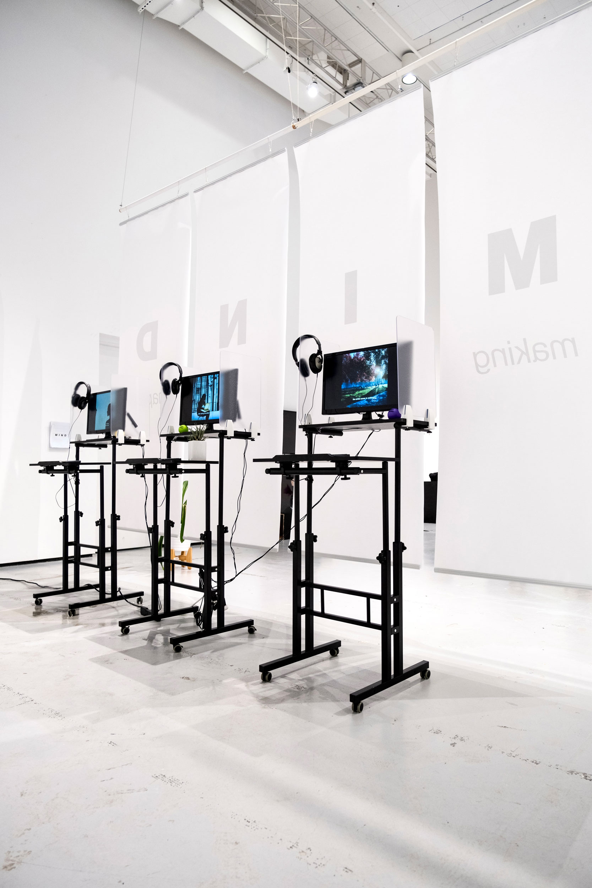
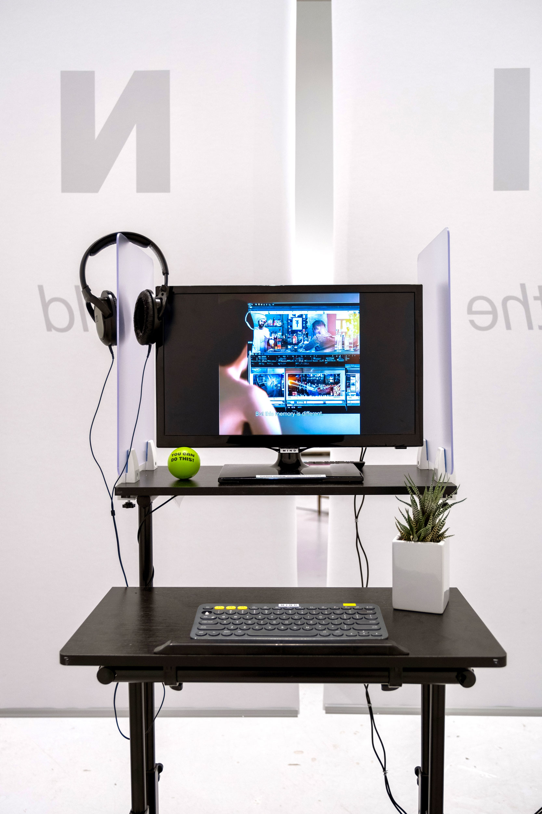
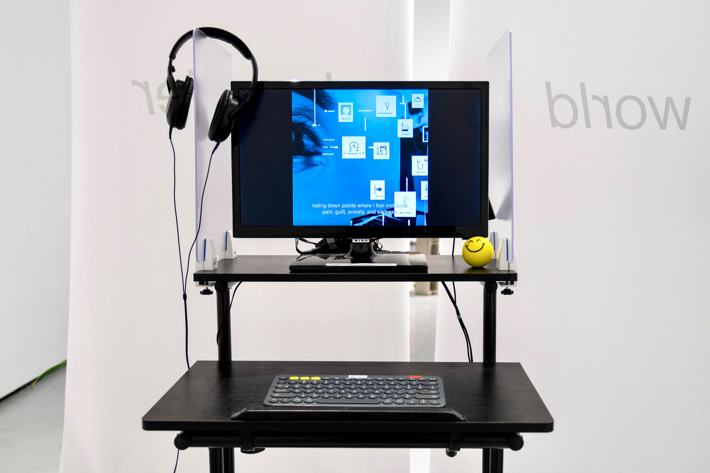
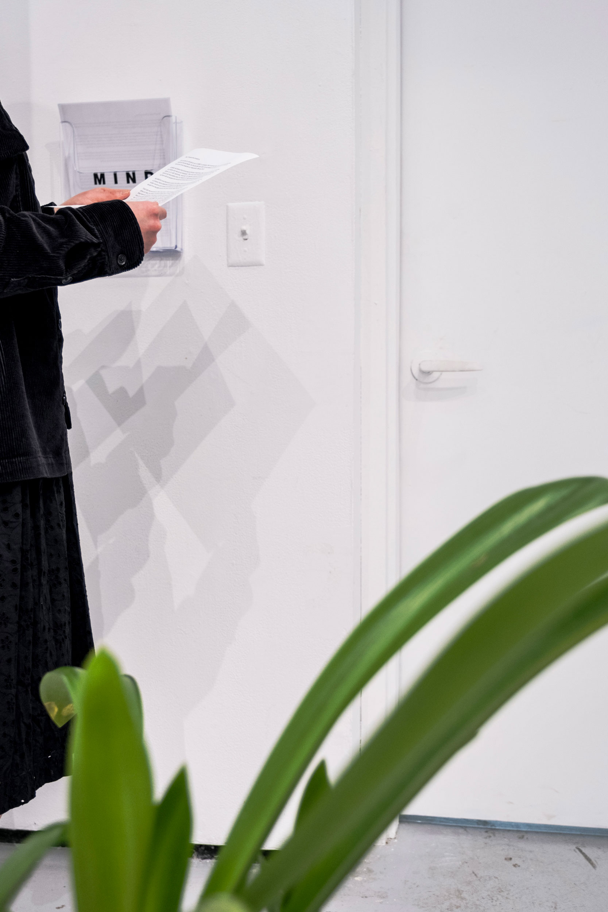

2023
MIND consists of a trilogy of experimental still image films, an IPO letter, and an installation that explore a future where memory editing and memory creation technology have become a tangible reality. By leveraging artificial intelligence as a collaborator, the works provoke discussions around labor, automation, and human-machine relationships.
The work centers around the narrative of memory editors employed at MIND, a fictional startup driven by the mission of making the world happier. These memory editors are tasked with sanitizing memories, meticulously cleaning up the often traumatic recollections of the company's customers. However, as they immerse themselves repeatedly in these memories, delicately altering them, the editors find their own realities becoming increasingly distorted.
MIND explores the hidden realms of human labor that form the foundation of the technologies we encounter and engage with daily. It sheds light on the psychologically demanding and often unacknowledged work of social media content moderators. Moreover, it highlights the use of images, unbeknownst to their subjects and creators, as the training data that fuels artificial intelligence models. By doing so, the work prompts viewers to consider the human labor that is frequently overlooked but essential for the creation and maintenance of the technologies we interact with. It asks who these technologies are designed for, inviting viewers to reflect upon the broader societal implications of our increasingly technologically mediated existence.
MIND (installation view, Green Hall Gallery, New Haven), 2023
MIND (installation view, Green Hall Gallery, New Haven), 2023
MIND (installation view, detail shot, Green Hall Gallery, New Haven), 2023
MIND (installation view, detail shot, Green Hall Gallery, New Haven), 2023
MIND (installation view, detail shot, Green Hall Gallery, New Haven), 2023